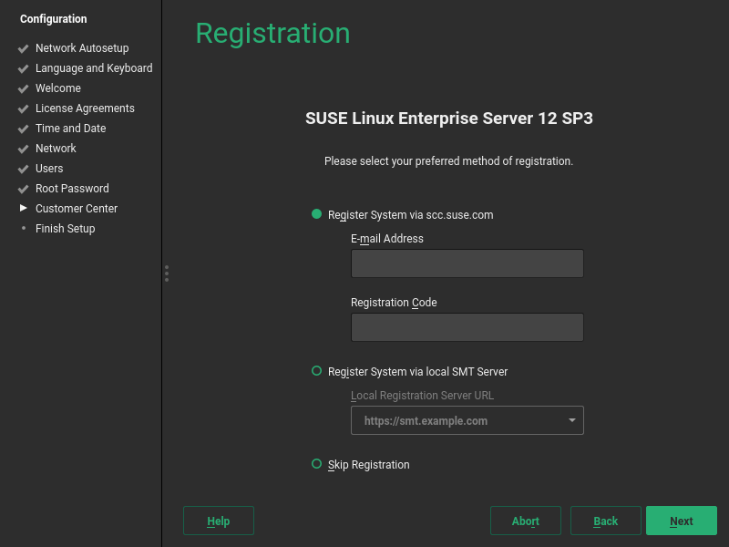

After insertion of the prepared microSD card, connect a display, Ethernet and USB keyboard and mouse first, then provide power over Micro USB. After a few seconds you should be able to see a few lines of text on the screen. If that is not the case, recheck the connection to the display.
Operation Without Mouse
YaST can be used without a mouse by only using the keyboard. Every GUI element has an accelerator configured, visible as underlined letter. To activate such an accelerator, press the letter together with Alt.
On the first boot, the system will expand to fill the entire SD card, so be patient.
After a few minutes, YaST will lead you through the initial system setup.
First, the system language and keyboard layout needs to be configured. Use the drop-down boxes and click .

Select on this screen.
Read the License Agreement. You need to accept the license by selecting and choosing .

Select the time zone either by clicking the area in the map or selecting region and zone in the drop-down boxes.
If the time and date shown at the bottom on the screen are incorrect, setup the Network Time Protocol client by following these steps:
Click to open the NTPD configuration.
Click to synchronize date and time with NTPD.
After the synchronization completed, click to return to the Time and Date overview.
Click to proceed.
On this page, you can configure a default user account.

Automatic Login not supported
Automatic Login is not supported by xdm, the default display manager. Install gdm after the installation to make it work.
If you chose to skip the previous step or if you chose not to set a root password, you will be asked to provide one now. Do not forget what you enter here, you will need it for administration!

On this screen you need to enter your E-mail address and the registration code you received. You can also choose to .
 Skipping the Registration
If you choose to skip the registration here, you will not receive updates or patches until you registered manually using YaST.
After successful registration you will be given the option to activate Modules as additional package repositories. For example the Toolchain Module provides the supported versions of the GNU Compiler Collection for SUSE Linux Enterprise Server for ARM 12 SP3.
Click to exit the setup wizard and continue the system start-up.

When the system finished booting, you will see the following login screen:
Type in the user name and password you chose during the initial configuration. The default IceWM desktop starts. By using the menu, you can start an XTerm terminal: